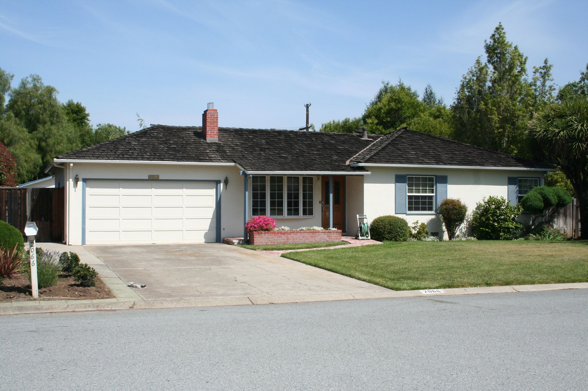
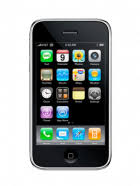
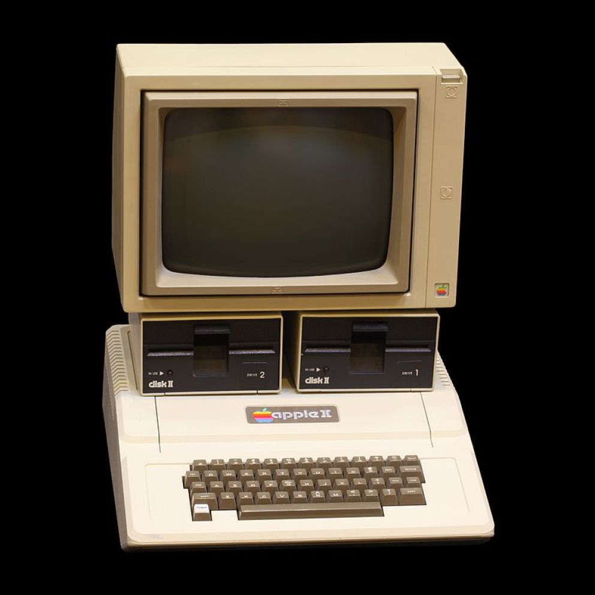
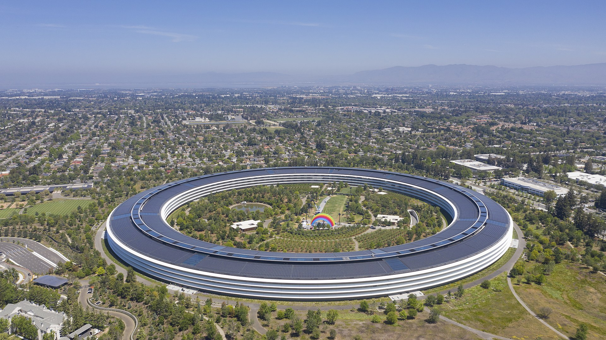

Apple Computer Compagny
fut créer en 1976 par Steve Wozniak et Steve Jobs dans un garage  Ils étaient déjà assez connu dans leur quartier via leur invention comme par exemple le Blue Box fais par Wozniak fais en 1970. Après beaucoup de rencontre dans des club mais les Steve avec comme objectif D'aller encore plus loin et en 1976 dans le garage de Steve Jobs l'Apple I est créePremier IPhone
Après plusieurs années a essayer la création de produit avec par exemple le Macintosh puis le retour de Steve Jobs après une séparation de plusieurs années , les téléphones était a la mode et après quelque essai Apple devais faire ce qu'ils savent faire le mieux... innover c'est ainsi que le premier IPhone a vu le jour en Novembre 2007
Le premier grand succès d'Apple
Après la réussite du Apple I un ordinateur intelligent Apple Computer Compagny tente un coup de maitre et c'est ainsi que nais en 1977 , L Apple II : 
Depuis l'entreprise a pris une grosse place dans la techologie avec la création entre temps de l'IPad en 2010 un changement de local a été fais en 2017 ou elle ce trouvais a Infinite Loop une rue a Cupertino elle ce trouve a Apple Park créer par l'entreprise elle même
Apple devenais une entreprise avec beaucoup d'avance technologique mais avec toujours la même idée , d'être différent
Il avait un grand pouvoir sur l'informatique , les ordinateurs les téléphones portables , les tablettes
Ces dernières était encore a la mode donc Apple continua les innovations
Voici maintenant un de leur nouveau produit...
Pour en savoir plus cliquer ici ou allez dans Caractéristiques